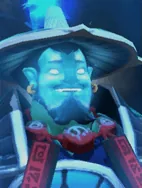
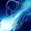

Not in the shop. One of the Pandaren spirits: the only way to get it is Pandaren fishing, when a Pandaren on your board brings it in at the start of a round.

Ball Lightning
Active ability: Activates on Full Mana
Storm Spirit becomes volatile electricity, charging across the battlefield, dealing magical damage to enemies in the path. The damage is increased per 100 distance traveled.
Killing an enemy chess piece instantly resets the cooldown of Ball Lightning.
| ★ | ★★ | ★★★ | |
|---|---|---|---|
| TRAVEL SPEED | 1000 | 1250 | 1500 |
| DAMAGE RADIUS | 125 | 150 | 200 |
| Cooldown (s) | 6 | 5 | 4 |
| Mana cost | 100 | ||
The Storm is coming in.
Stats
| ★ | ★★ | ★★★ | |
|---|---|---|---|
| Health | 700 | 1400 | 2800 |
| Mana | 100 | 100 | 100 |
| Armor | 4 | 4 | 4 |
| Magic resistance | 10% | 10% | 10% |
| Attack damage | 60–70 | 120–140 | 240–280 |
| Attack interval (s) | 1.4 | 1.4 | 1.4 |
| Attack range | 400 | 400 | 400 |
| Move speed | 500 | 500 | 500 |
 Pandaren · Hospitality
Pandaren · Hospitality
- (1) Each round, a chance to receive a random piece that shares a race with one of your board pieces. Pieces already on your board and pieces you already have at 3 stars are skipped. The chance starts at ~6.8%, rises after every miss and resets when you catch something.
- (2) Also, each Pandaren on your board has a 15% chance (same pity and luck multipliers) to bring a copy of itself.
 Mage · Magical Vulnerability
Mage · Magical Vulnerability
Each friendly Mage on the board (including itself) gives Mages +10% mana gain, up to +60%.
- (3) All enemies get -30% magic resistance.
- (6) All enemies get another -35% magic resistance (-65% in total).
- (9) Enemies freeze (stunned) whenever they take magic damage, for magic damage ÷ 400 seconds (at least 0.2s).